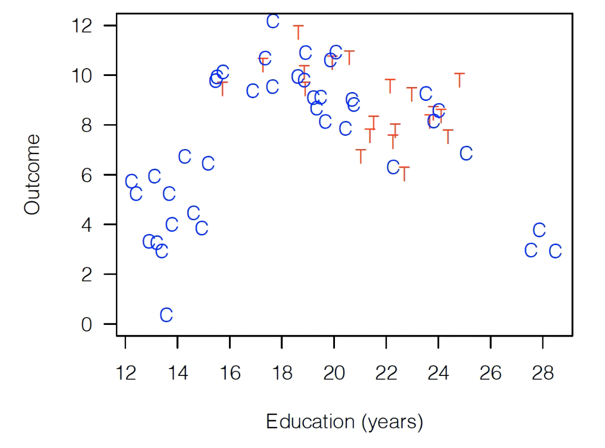

Matching¶
This week we’ll be exploring matching: an approach to analyzing observational data that is primarily designed to do the same types of analyses as regression, but with less sensitivity to the functional form assumptions implicit to regression.
As we move forward, I’ll be drawing a lot (including most figures) from Ho, Imai, King and Stuart (2007) and two of Gary King’s public lectures on youtube (theory, implementation). I’ve streamlined his argument and tried to adapt it for the concepual framworks, language, and level of technical depth we’re targeting in this class, but if you’re really into this topic, that source material may be extremely valuable to explore.
Model Dependency¶
To understand matching, it helps to start with the problem matching is designed to solved: model dependence.
The term model dependence refers to a situation in which the results of an analysis are highly sensitive to apparently small decisions made by the researcher in how they specify a regression – for example, whether they include \(X\) in their regression, or \(X + X^2\), or whether they use \(X\) or \(log(X)\) as an independent variable.
“But wait!” you may say: we have all sorts of test statistics for evaluating what fits our data best, so shouldn’t we be able to just pick the specification with the best [insert test statistic of choice here]?
Yes… most of the time. But where you get into trouble is when you want to use a model fit on data that covers a certain range of values to make predictions about outcomes outside that range. For example, consider the following example:
Here we have a model where either a quadratic functional form or a linear functional form fits our data extremely well. Maybe there’s a third decimal place distinction in some test statistic, but really, they’re the same in the area we have our actual data.
But now suppose you’re asked to make predictions about outcomes at , say, \(x=5\). Out there, the functional form you choose has a tremendous impact! So this is what’s called “model dependence”.
Note that “model dependence” is a condition that depends on the application. If you fit this model to predict \(Y\) at \(x=1.02315\), there’s probably very little model dependence here. But if you want to predict a value at \(x=5\), there is. Something we’ll come back to.
Model Dependency, Causal Inference, and Imbalance¶
OK, fine, but I know I’m never supposed to extrapolate that far from my data, so who cares?
Well… funny story: turns out we do this in causal inference all the time. That’s because if our treatment group and our control groups look very different (something called “imbalanced”), then we are sometimes actually extrapolating a relationship we estimate from the control group data to estimate what the treatment group would look like in areas where have no actual data from the treatment group.
OK, let’s illustrate that. Suppose we have the following observational data (i.e. this is data from the world, not a randomized experiment). It’s made up, but let’s assume it’s from a consumer survey, where Treatment is whether the customer came to the store with a coupon, and “Outcome” is spending. Read T’s are consumer we’ve been treated (got promotion), blue Cs are consumers who weren’t treated (controls).
As you can see, this data is badly imbalanced, meaning that the range of values of Education are very different for our control population and our treatment population. For the control group, Education ranges ranges all the way from 12-28 years, while our treated group only has observations between 16 and 24.
Why does this matter? Suppose we now fit the following regression:
That fit would look something like this:
As you can see, Treatment is above Control, so we have a large positive treatment effect!
OK, but that clearly seems weird. It’s not fitting those control observations, so instead let’s try this:
That looks like this:

Well, now the treatment effect is negative! Red below blue!
So which is right? Well… the thing that should probably make us uncomfortable is that the way we drew that red parabola is that we estimated a relationship for our full data, but really we were just fitting our control data, then applying that fit to treatment. As you can see, no treatment observations are really contributing to us fitting a big inverted U, since all the T observations are in the middle of the distribution.
Now, if you want to take a strong theoretical position and say “I’m really confident education plays the same role for people who brought in coupons as those who did not”, then you can stop here. But…
The idea of matching is that maybe that should make us nervous, and that maybe there’s a way to avoid that
Matching: Better thought of as pruning¶
When you hear the term “matching”, your first thought is probably that the focus of the method is finding pairs of observations that are similar, and… you’re not wrong. But a better way to think of matching is as a method for pruning observations that don’t have any close matches.
In other words, at its core, matching is about pruning back your dataset until you’re left with control and treatment observations that look relatively similar. Any control observations that are completely unlike any treatment observation (in terms of our explanatory variables) you drop, and any treatment observations that are completely unlike any controls you drop.
So if we ran matching here, we’d end up with the following dataset (dropped observations greyed out) (matching isn’t deterministic, there are choices, but a reasonably matching algorithm would likely do something like this):

As you can see, we’ve now dropped all the control observations that are completely unlike our treatment variables. And now the range of Education for control variables and treatment variables is about the same – we have a “balanced” dataset.
And now it doesn’t matter if we do a simple linear fit or if we include a quadratic term – the results look exactly the same (i.e. no model dependence):

And if we limit our focus to these observations, we see that regardless of the functional form we put in our regression, we get no treatment effect.
The Cost of Matching¶
So what do we lose when we do matching? The main answer is that the group of people for whom our treatment effect is being estimated is changing dramatically. We aren’t estimating an effect for the whole population we started with, we’re estimating the effect for this small group where T and C overlap, which may or may not be useful in later applications.
In these kinds of studies, we often have far more control observations than treatment observations, and the control variables will often cover a much bigger range of values of your explanatory values (if not many people get treated, then it makes sense that the people who get treated may all look similar, and so may fall into a smaller range of, say, education than the general populous).
In these situtations – where during matching you get to keep all your treated observations because they all have close controls, but you drop some controls, then what you’re estimating is the Average Treated on the Treated, which isn’t half bad (it’s often all we get with observational data).
But if you have Treated observations that don’t look like any control observations and so you have to drop them, well now you’re estimating an effect on… the sample of people in the range of explanatory variables for which there are both treated and untreated observations? And who really knows what that is.
Causal Inference Assumptions¶
Before closing our discussion of the high level pros and cons of matching, it’s worth emphasizing one important point: both matching and good old fashion linear regression rest on the same basic assumption when it comes to causal inference: there are no baseline differences between the treatment and control groups after conditioning on observable variables.
Matching, in other words, is a way to address possible modelling errors, not to fundamentally change what assumptions we’re making about the differences between treatment and control groups in terms of potential outcomes.
In Summary¶
Matching is really best thought of a way of pruning your data to a sample where C and T observations look similar (impoves balance)
Where the original data has observations of C and T that don’t look similar (it’s imbalanced), matching helps reduce the sensitivity of results to the functional form assumptions you make in your regression.
But by changing the data on which you’re making an estimate, you are also changing the actually population for which you’re estimating your effect, which may be important to understand.
To use matching for causal inference, you have to make the same basic assumption you use for regular linear regression: controlling for observable differences is enough to eliminate baseline differences in terms of potential outcomes for our treated and untreated observations.